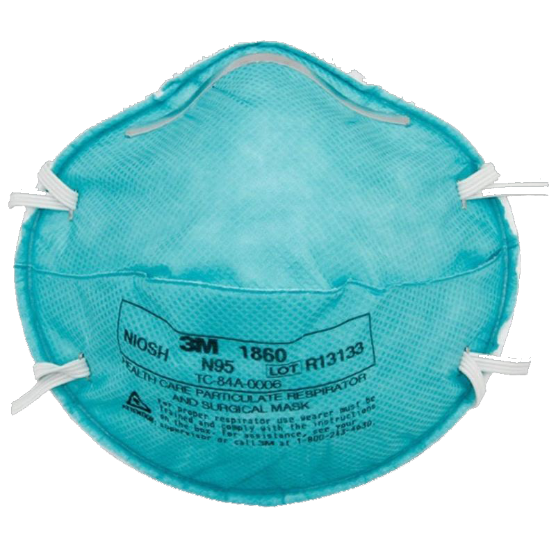
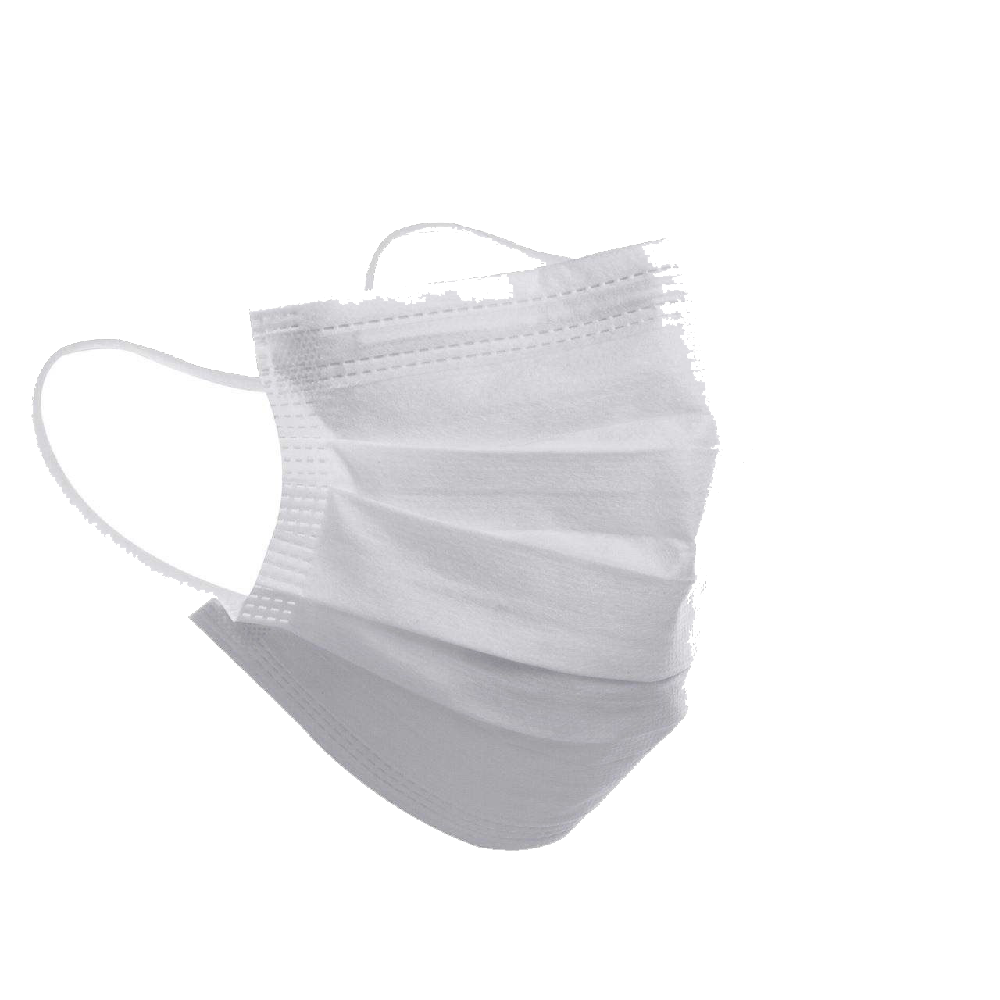

Woolin Auto Mask Selling Platform
Welcome to Woolin Auto! We sell 3 types of masks(N95, Surgical, Surgical N95) to China, UK, USA and Japan currently! Hope you and your family can stay health and safe in this COVID-19 period!
Log in and choose your favorite masks!
 
| N95 mask or N95 respirator is a particulate-filtering facepiece respirator that meets the U.S. National Institute for Occupational Safety and Health N95 classification of air filtration, meaning that it filters at least 95% of airborne particles. | Surgical mask, also known as a face mask, is intended to be worn by health professionals during healthcare procedures. It is designed to prevent infections in patients and treating personnel by catching bacteria shed in liquid droplets and aerosols from the wearer's mouth and nose. | Surgical N95 respirators are both approved by NIOSH as an N95 respirator and also cleared by the FDA as a surgical mask. These products are frequently referred to as medical respirators, healthcare respirators, or surgical N95s. It is a high standard mask. |